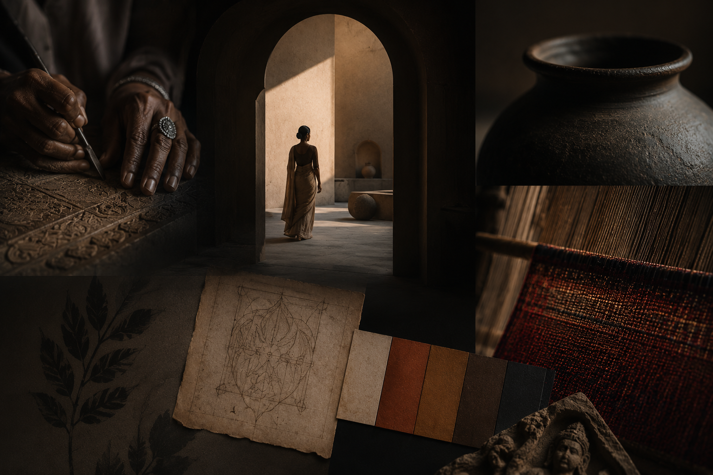

Craftsmanship
Hands and Process
Workshops reveal the discipline of making: pressure, rhythm, clay, textile, script, and personal adornment.

A contemporary cultural exhibition that reframes India through craftsmanship, sensory storytelling, material intelligence, and immersive design.
Bindi represents identity, intimacy, and cultural symbolism.
Brera represents curation, luxury, and elevated artistic value.
Together, they create a bridge between heritage and contemporary perception. The title is intentionally not geographic; it is a way of shifting how Indian culture is seen, handled, and valued in a European design context.
The exhibition moves away from decorative event language and toward an editorial, premium, contemporary experience. The focus is craft process, refined participation, ingredient histories, spatial atmosphere, and the intelligence held inside everyday materials.
Visitors are invited to observe, touch, write, print, style, listen, and reflect through designed encounters rather than decorative displays.
Workshops reveal the discipline of making: pressure, rhythm, clay, textile, script, and personal adornment.

Spices, botanicals, fragrance ingredients, and instruments are framed as histories of agriculture, trade, wellness, and performance.

The Womb of OM creates a spatial transition through vibration, origin, reflection, and architectural storytelling.
The updated direction uses refined cultural interpretation, restrained visual rhythm, and visitor participation with purpose. The experience is now structured around craft intelligence, material culture, and contemporary perception.